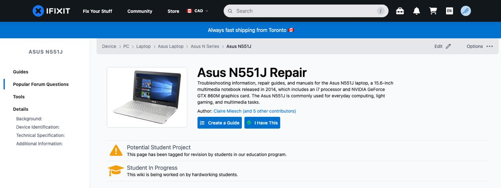
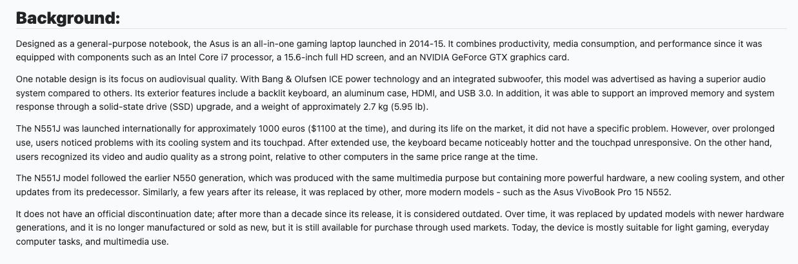
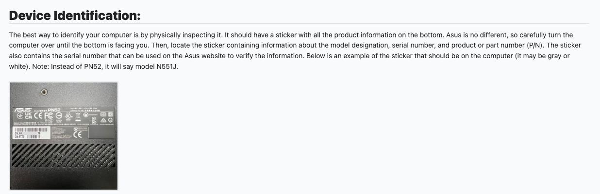

SEO Project
Click HERE to see the project
The goal of our work was to improve the Asus N551J page so that users have easier access to reliable and relevant information regarding problems with this model. This project presents technical information, identification details, and some repair resources that may be useful for troubleshooting and repairing this specific model, posted on the iFixit website.
The main steps:
- Research about the computer
- Organize information from reliable sources (Asus manual)
- Work on various documents until we arrive at the desired information and formatting so that the user has the best experience when visiting our page.
My contributions
Throughout the process, my partner and I divided the work well, always discussing to decide what would be fairest for both sides. During the weeks, I focused mainly on the background and product identification section and simultaneously helped my partner with anything he needed (for example, communication with iFixIt).
The background consists of general information about the computer, ranging from the launch price to the sound quality of the device, focusing on being informative without using marketing language. The user can then use the information in this section to compare it with their own computer. I then presented more specific details on how to identify it in the next section. In the device identification section, I included a step-by-step guide on how to identify the computer, helping the user find the sticker that has the model, and confirming that the document meets their needs. To ensure that all of this is as complete as possible, I used SEO strategies, conducted keyword research, and consulted multiple sources to find reliable information. Furthermore, I used writing skills - learned in the WRIT 2201 course - to turn technical information into informative and easy-to-understand.
Furthermore, I actively participated in planning discussions with my partner and directly helped divide the work so that responsibilities were fairly distributed. Throughout the process, I maintained clear and constant communication with my colleague through the digital platform we agreed upon at the beginning of the project (Discord), always monitoring progress and, in case of problems, presenting solutions as soon as possible. For each weekly step, I provided feedback and submitted my part always on time, thus helping to ensure smooth coordination throughout all stages. Maintaining this open and collaborative approach toward communication, we were able to stay organized and complete each part on time to the best of our abilities.


Reflections & Applications
Knowing what I know now, I would start the planning process earlier, creating a more detailed schedule system containing intermediate checkpoints. In addition, I would encourage more frequent peer reviews, creating more space for updates to be incorporated gradually, instead of receiving them at the final stages.
I also learned how to transform technical information into accessible and informative texts, and they require several versions and different points of view to be of good quality. With that, I can say that the workflow was effective, but having a more structured delivery structure could have helped with last-minute pressure, which would allow us more time to help the work using feedback as a basis.
Thinking professionally, I can see that what I learned can be directly translated to workplace collaboration. I also learned that working on my part while simultaneously supporting my partners – providing support and constructive feedback – puts us on a path to achieving positive results and maintaining a constructive working environment. For my future career, I will keep in mind what I learned so that I can succeed both individually and in group projects, demonstrating quality and professionalism.